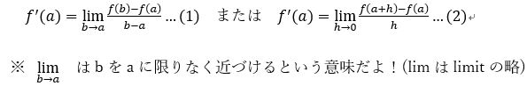
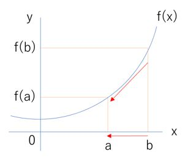
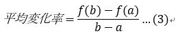

【１．微分の定義】
・y=f(x)を微分するとy’=f’(x)という新たな関数が得られるよ！
・また、ここで「f’(a)はy=f(x)のx=aにおける微分係数である。」ということを覚えておこう！
【２．導関数】
y=f(x)という関数を微分するとf’(x)という新たな関数が得られるよね？
このf’(x)のことを導関数と呼ぶんだけど…
つまり！「y=f(x)の導関数を求めよ」と「y=f(x)を微分せよ」は全く同じ意味なんだよ！
ここで、導関数を求める時にいちいち微分の定義(1)(2)に当てはめると面倒くさいよね？
そんな時に便利なのが下の式！手間を省いて計算間違いも少なくなるので覚えておこう！

①(X^n )^'=nXn-1
例：(X^3 )^'=3X^(3-1)=3X^2
②{af(x)}^'=af'(x)（aを定数とする）
例：(〖3X〗^3 )^'=3*3X^(3-1)=9X^2
③{af(x)+bg(x)}^'=af^' (x)+bg'(x)（a,bを定数とする）
例：(〖4X〗^3+3X^2 )^'=12X^2+6X
④(a)^'=0（aを定数とする）
例：(3)’=0
【３．平均変化率】
平均変化率って難しい言い方してるけど、これって実は直線の傾き(変化の割合)ことなんだ！
これを高校数学では平均変化率と呼んで式(3)のように書けるよ！
ここまで、微分や導関数、平均変化率などいろいろなことを話したけど…
結局、これらを使って何が求まるのかというと「ある点における傾き」を求めることができるよ！
「傾き」を求めることでどんな問題を解けるようになるのかは次のテーマで説明するね！
戻る練習問題へ